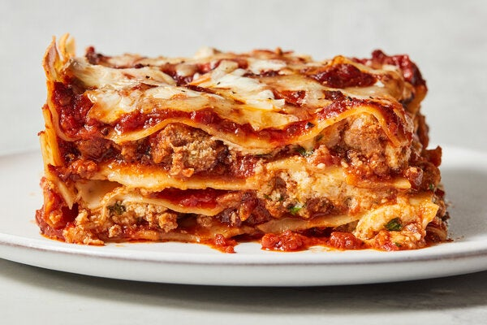

Lazy Lasagna

Description
Welcome to the ultimate comfort food shortcut that doesn't skimp on flavor: our Lazy Lasagna! This dish is a testament to the fact that sometimes, the best meals come from the simplest of methods. Whether you're juggling a busy schedule or simply seeking the cozy embrace of a home-cooked meal without the fuss, this recipe is about to become your new best friend. Packed with hearty ground beef, creamy ricotta, and layers of cheesy goodness, it's everything you love about traditional lasagna, turned delightfully simple.
Imagine diving into layers of perfectly cooked penne, enveloped in a rich marinara sauce, and mingled with succulent ground beef, all topped with a golden, bubbly cheese crust. This Lazy Lasagna recipe promises all the comfort and taste of the classic dish but cuts down on prep time and complexity, making it perfect for weeknights or whenever the lasagna craving strikes. Let's walk through the steps together, and I'll show you how to whip up this crowd-pleaser that's bound to become a staple in your culinary repertoire.
Ingredients
- Penne Pasta - 1 pound (about 450 grams)
- Ground Beef - 1 pound (about 450 grams)
- Marinara Sauce - 24 ounces (about 680 grams)
- Ricotta Cheese - 15 ounces (about 425 grams)
- Shredded Mozzarella Cheese - 2 cups (about 8 ounces or 226 grams)
- Grated Parmesan Cheese - ½ cup (about 2 ounces or 56 grams)
- Egg - 1 large
- Salt and pepper - to taste
Steps
- Preheat Oven: Set your oven to 375°F (190°C) to ensure it's ready for baking.
- Cook Pasta: Boil the penne pasta in salted water until it's just al dente, usually about 1 minute less than the package instructions. Drain well.
- Brown Ground Beef: While the pasta cooks, brown the ground beef in a large skillet over medium heat. Season with salt and pepper to taste. Once fully cooked, drain any excess fat.
- Mix Marinara: Stir the marinara sauce into the cooked ground beef, combining them thoroughly.
- Prepare Cheese Mixture: In a bowl, mix the ricotta cheese with the egg, and season with a little salt and pepper. This mixture adds richness and helps bind the ingredients.
- Combine Ingredients: In a large mixing bowl, gently combine the cooked pasta with the beef and marinara sauce mixture. Fold in the ricotta mixture and half of the shredded mozzarella cheese until everything is evenly distributed.
- Assemble in Baking Dish: Transfer the mixture to a 9x13 inch baking dish. Sprinkle the remaining mozzarella and all of the grated Parmesan cheese evenly over the top.
- Bake: Cover the dish with aluminum foil and bake in the preheated oven for 25 minutes. Then, remove the foil and bake for an additional 10-15 minutes, or until the cheese on top is golden and bubbly.
- Rest and Serve: Let the "lazy lasagna" rest for a few minutes after baking. This makes it easier to serve and allows the flavors to meld beautifully.